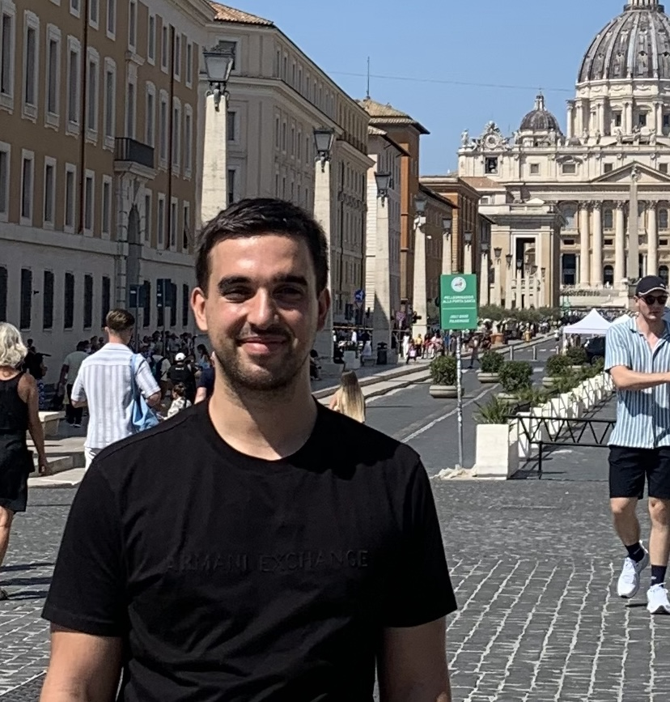

René Pfitscher
Postdoctoral researcher in mathematics
University of Science and Technology of China
School of Mathematical Sciences
Host: Shucheng Yu

Research
My research is in homogeneous dynamics and number theory. I am particularly interested in equidistribution on homogeneous spaces, random walks on Lie groups, Diophantine approximation, and related questions in the geometry of numbers, harmonic analysis, and measure theory.
Publications and preprints
- René Pfitscher, Anurag Rao, Shucheng Yu, Han Zhang. Zero-one laws for uniform approximation via Gaussian and Eisenstein integers . Preprint.
- René Pfitscher. Integrability of Siegel transforms and an application . Preprint.
- René Pfitscher. Counting rational approximations on rank one flag varieties . To appear in Israel Journal of Mathematics.
Teaching and academic responsibilities
I organize and teach this course independently. I also wrote accompanying course notes, which are available here.
Previous teaching
I have served as a teaching assistant for undergraduate and master's courses at Université Sorbonne Paris Nord and ETH Zürich.
- Université Sorbonne Paris Nord, 2023–2025. Algebra IV (three semesters), Analysis I, Analysis for Engineers, Analysis for Computer Science, and Foundations of Algebra (Master's level).
- ETH Zürich, 2019–2022. Analysis I (two semesters), Analysis II (two semesters), Algebra II, and Functional Analysis I (Master's level).
Education
Thesis: Equidistribution, Siegel transforms, and counting rational approximations on flag varieties .
Master's thesis: Property τ via effective equidistribution of S-arithmetic orbits .
Selected distinctions
Willi-Studer Prize, ETH Zürich, 2023
Awarded to the best graduates in their degree programme.
Contact
School of Mathematical Sciences
University of Science and Technology of China
Hefei, Anhui, China
Email: last name at ustc dot edu dot cn